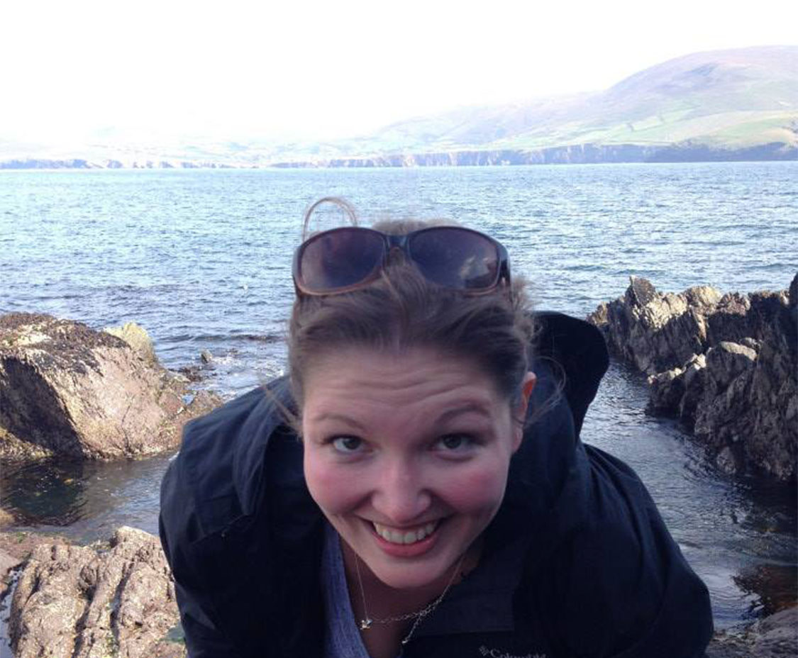

Nicki Mazzocca | Scripps MFA Candidate
Nicki Mazzocca has a background in theatre and narrative filmmaking. She has worked in Chicago's creative community since 2011 and is passionate about using new media to tell stories differently. Specifically, Nicki is interested in telling the stories of Appalachia in unique and captivating ways. An Appalachian herself, Nicki said "we often have our stories told for us or at us... I would love to use media [to tell those stories] from within."
New areas of interest: Interactive Media, Virtual Reality, and Appalachian Studies.
Local Organizations: Little Cities of Black Diamonds and The Winding Road.